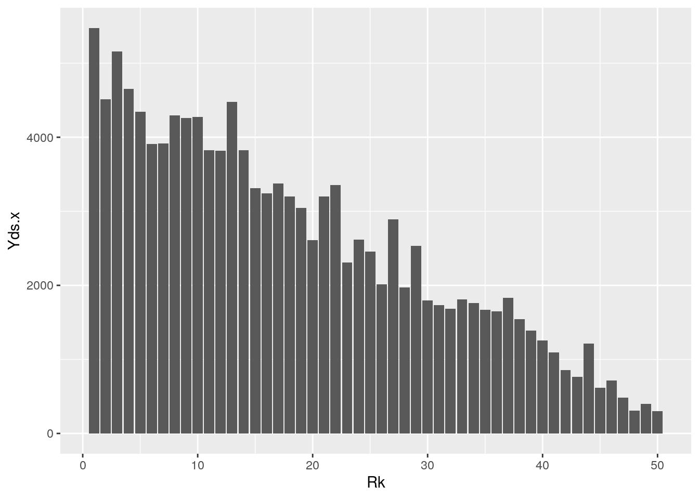

January 1, 0001
R Markdown
This is an R Markdown document. Markdown is a simple formatting syntax for authoring HTML, PDF, and MS Word documents. For more details on using R Markdown see http://rmarkdown.rstudio.com.
When you click the Knit button a document will be generated that includes both content as well as the output of any embedded R code chunks within the document. You can embed an R code chunk like this:
# Packages used
library(tidyverse)
library(fivethirtyeight)
library(pastecs)
library(Hmisc)
library(dplyr)
# Introduction and Data Sets
data2013 <- read.csv("data2013.csv")
data2014 <- read.csv("data2014.csv")
# The two datasets I chose are the top 50 passing leaders for
# the 2013 and 2014 NFL season. The variables are similar in
# that they include the rank, player's name, team they played
# for, yards gained by passing, passing touchdowns,
# quarterback rating, etc. These data sets were acquired from
# a Pro-Football Reference website that had passing leader
# statistics for each year. I chose these data sets because
# ever since I started going out with my boyfriend, I became
# interested in the sport and have learned a lot about it.
# Q2: Joining/Merging
joinedbyrank <- data2013 %>% left_join(data2014, by = "Rk")
joinedbyteam <- data2013 %>% left_join(data2014, by = "Team")
joinedbyplayer <- data2013 %>% left_join(data2014, by = "Player")
# I joined the two data sets containing data from 2013 and
# 2014 by using the left_join() function with 'Rk' or each
# players rank number being the common variable as well as
# Teams. I chose to do a left_join instead of a full_join
# because left_join() adds the rows that correspond to the
# second data set and allowed me to keep all of my variables.
# It allowed me to have the two years next to each other in
# order to conduct statistical analyses.
# Question 3: Wrangling Using Filter
joinedbyrank %>% filter(Rk == "1")## Rk Player.x Team.x Yds.x TD.x QBR.x Player.y Team.y Yds.y TD.y QBR.y
## 1 1 Peyton Manning DEN 5477 55 79 Drew Brees NOR 4952 33 74.8joinedbyrank %>% filter(Rk == "23")## Rk Player.x Team.x Yds.x TD.x QBR.x Player.y Team.y Yds.y TD.y QBR.y
## 1 23 Matt Schaub HOU 2310 10 38.3 Tony Romo DAL 3705 34 79.7joinedbyteam %>% filter(Team == "DAL")## Rk.x Player.x Team Yds.x TD.x QBR.x Rk.y Player.y Yds.y TD.y QBR.y
## 1 14 Tony Romo DAL 3828 31 61.9 23 Tony Romo 3705 34 79.7
## 2 49 Kyle Orton DAL 398 2 47.2 23 Tony Romo 3705 34 79.7joinedbyrank %>% filter(str_detect(Team.x, "DAL"))## Rk Player.x Team.x Yds.x TD.x QBR.x Player.y Team.y Yds.y TD.y QBR.y
## 1 14 Tony Romo DAL 3828 31 61.9 Aaron Rodgers GNB 4381 38 78.3
## 2 49 Kyle Orton DAL 398 2 47.2 Jimmy Clausen CHI 223 2 44.1joinedbyrank %>% filter(str_detect(Team.y, "DAL"))## Rk Player.x Team.x Yds.x TD.x QBR.x Player.y Team.y Yds.y TD.y QBR.y
## 1 23 Matt Schaub HOU 2310 10 38.3 Tony Romo DAL 3705 34 79.7# Using Arrange
joinedbyrank %>% arrange(desc(Yds.x))## Rk Player.x Team.x Yds.x TD.x QBR.x Player.y Team.y Yds.y
## 1 1 Peyton Manning DEN 5477 55 79.0 Drew Brees NOR 4952
## 2 3 Drew Brees NOR 5162 39 69.1 Andrew Luck IND 4761
## 3 4 Matthew Stafford DET 4650 29 53.5 Ben Roethlisberger PIT 4952
## 4 2 Matt Ryan ATL 4515 26 67.5 Matt Ryan ATL 4694
## 5 13 Philip Rivers SDG 4478 32 75.1 Joe Flacco BAL 3986
## 6 5 Tom Brady NWE 4343 25 63.1 Matthew Stafford DET 4257
## 7 8 Andy Dalton CIN 4293 33 54.8 Peyton Manning DEN 4727
## 8 10 Carson Palmer ARI 4274 24 54.0 Tom Brady NWE 4109
## 9 9 Ben Roethlisberger PIT 4261 28 58.0 Ryan Tannehill MIA 4045
## TD.y QBR.y
## 1 33 74.8
## 2 40 62.6
## 3 32 68.7
## 4 28 68.4
## 5 27 68.2
## 6 22 47.3
## 7 39 72.0
## 8 33 76.2
## 9 27 59.3
## [ reached 'max' / getOption("max.print") -- omitted 41 rows ]joinedbyrank %>% arrange(desc(Yds.y))## Rk Player.x Team.x Yds.x TD.x QBR.x Player.y Team.y Yds.y
## 1 1 Peyton Manning DEN 5477 55 79.0 Drew Brees NOR 4952
## 2 4 Matthew Stafford DET 4650 29 53.5 Ben Roethlisberger PIT 4952
## 3 3 Drew Brees NOR 5162 39 69.1 Andrew Luck IND 4761
## 4 8 Andy Dalton CIN 4293 33 54.8 Peyton Manning DEN 4727
## 5 2 Matt Ryan ATL 4515 26 67.5 Matt Ryan ATL 4694
## 6 6 Joe Flacco BAL 3912 19 48.0 Eli Manning NYG 4410
## 7 14 Tony Romo DAL 3828 31 61.9 Aaron Rodgers GNB 4381
## 8 11 Andrew Luck IND 3822 23 63.8 Philip Rivers SDG 4286
## 9 5 Tom Brady NWE 4343 25 63.1 Matthew Stafford DET 4257
## TD.y QBR.y
## 1 33 74.8
## 2 32 68.7
## 3 40 62.6
## 4 39 72.0
## 5 28 68.4
## 6 30 62.5
## 7 38 78.3
## 8 31 63.6
## 9 22 47.3
## [ reached 'max' / getOption("max.print") -- omitted 41 rows ]# Using Select
joinedbyteam %>% select(Team, Yds.x, Yds.y, QBR.x, QBR.y)## Team Yds.x Yds.y QBR.x QBR.y
## 1 DEN 5477 4727 79.0 72.0
## 2 ATL 4515 4694 67.5 68.4
## 3 NOR 5162 4952 69.1 74.8
## 4 DET 4650 4257 53.5 47.3
## 5 NWE 4343 4109 63.1 76.2
## 6 BAL 3912 3986 48.0 68.2
## 7 MIA 3913 4045 48.4 59.3
## 8 CIN 4293 3398 54.8 48.5
## 9 PIT 4261 4952 58.0 68.7
## 10 ARI 4274 1711 54.0 51.7
## 11 ARI 4274 1626 54.0 63.7
## 12 IND 3822 4761 63.8 62.6
## 13 IND 3822 301 63.8 57.9
## 14 NYG 3818 4410 38.6 62.5
## 15 SDG 4478 4286 75.1 63.6
## 16 DAL 3828 3705 61.9 79.7
## 17 KAN 3313 3265 45.0 51.7
## 18 JAX 3241 2908 34.9 26.7
## 19 JAX 3241 492 34.9 26.2
## 20 CAR 3379 3127 64.3 57.3
## [ reached 'max' / getOption("max.print") -- omitted 60 rows ]joinedbyteam %>% select(Team, Yds.x, Yds.y, TD.x, TD.y)## Team Yds.x Yds.y TD.x TD.y
## 1 DEN 5477 4727 55 39
## 2 ATL 4515 4694 26 28
## 3 NOR 5162 4952 39 33
## 4 DET 4650 4257 29 22
## 5 NWE 4343 4109 25 33
## 6 BAL 3912 3986 19 27
## 7 MIA 3913 4045 24 27
## 8 CIN 4293 3398 33 19
## 9 PIT 4261 4952 28 32
## 10 ARI 4274 1711 24 7
## 11 ARI 4274 1626 24 11
## 12 IND 3822 4761 23 40
## 13 IND 3822 301 23 2
## 14 NYG 3818 4410 18 30
## 15 SDG 4478 4286 32 31
## 16 DAL 3828 3705 31 34
## 17 KAN 3313 3265 23 18
## 18 JAX 3241 2908 13 11
## 19 JAX 3241 492 13 3
## 20 CAR 3379 3127 24 18
## [ reached 'max' / getOption("max.print") -- omitted 60 rows ]joinedbyplayer %>% select(Player, Yds.x, Yds.y, QBR.x, QBR.y)## Player Yds.x Yds.y QBR.x QBR.y
## 1 Peyton Manning 5477 NA 79.0 NA
## 2 Matt Ryan 4515 4694 67.5 68.4
## 3 Drew Brees 5162 4952 69.1 74.8
## 4 Matthew Stafford 4650 4257 53.5 47.3
## 5 Tom Brady 4343 4109 63.1 76.2
## 6 Joe Flacco 3912 3986 48.0 68.2
## 7 Ryan Tannehill 3913 4045 48.4 59.3
## 8 Andy Dalton 4293 3398 54.8 48.5
## 9 Ben Roethlisberger 4261 4952 58.0 68.7
## 10 Carson Palmer 4274 1626 54.0 63.7
## 11 Andrew Luck 3822 4761 63.8 62.6
## 12 Eli Manning 3818 4410 38.6 62.5
## 13 Philip Rivers 4478 4286 75.1 63.6
## 14 Tony Romo 3828 NA 61.9 NA
## 15 Alex Smith 3313 3265 45.0 51.7
## 16 Chad Henne 3241 492 34.9 26.2
## 17 Cam Newton 3379 3127 64.3 57.3
## 18 Robert Griffin III 3203 1694 50.4 28.3
## 19 Geno Smith 3046 2525 41.0 45.9
## 20 Mike Glennon 2608 1417 55.2 51.5
## [ reached 'max' / getOption("max.print") -- omitted 30 rows ]# Using Mutate
joinedbyrank %>% mutate(Rk_cat = case_when(Rk <= 10 ~ "Top 10",
Rk >= 40 ~ "Bottom 10"))## Rk Player.x Team.x Yds.x TD.x QBR.x Player.y Team.y Yds.y
## 1 1 Peyton Manning DEN 5477 55 79.0 Drew Brees NOR 4952
## 2 2 Matt Ryan ATL 4515 26 67.5 Matt Ryan ATL 4694
## 3 3 Drew Brees NOR 5162 39 69.1 Andrew Luck IND 4761
## 4 4 Matthew Stafford DET 4650 29 53.5 Ben Roethlisberger PIT 4952
## 5 5 Tom Brady NWE 4343 25 63.1 Matthew Stafford DET 4257
## 6 6 Joe Flacco BAL 3912 19 48.0 Eli Manning NYG 4410
## 7 7 Ryan Tannehill MIA 3913 24 48.4 Derek Carr OAK 3270
## 8 8 Andy Dalton CIN 4293 33 54.8 Peyton Manning DEN 4727
## TD.y QBR.y Rk_cat
## 1 33 74.8 Top 10
## 2 28 68.4 Top 10
## 3 40 62.6 Top 10
## 4 32 68.7 Top 10
## 5 22 47.3 Top 10
## 6 30 62.5 Top 10
## 7 21 40.1 Top 10
## 8 39 72.0 Top 10
## [ reached 'max' / getOption("max.print") -- omitted 42 rows ]# Using summarize and group by
by_TD <- group_by(joinedbyrank, TD.x)
summarise(by_TD, Throwing = mean(TD.y, na.rm = T))## # A tibble: 30 x 2
## TD.x Throwing
## <int> <dbl>
## 1 0 2
## 2 1 2.33
## 3 2 3.5
## 4 4 3.5
## 5 5 2.5
## 6 7 11
## 7 8 7
## 8 9 5.5
## 9 10 34
## 10 11 11.7
## # … with 20 more rows# Q3 (b): Creating Summary Statistics
joinedbyrank %>% summarise_all(n_distinct)## Rk Player.x Team.x Yds.x TD.x QBR.x Player.y Team.y Yds.y TD.y QBR.y
## 1 50 50 34 50 30 46 50 33 49 27 47joinedbyrank %>% summarise_all(mean)## Rk Player.x Team.x Yds.x TD.x QBR.x Player.y Team.y Yds.y TD.y QBR.y
## 1 25.5 NA NA 2555.18 15.92 NA NA NA 2530.64 15.9 NAjoinedbyrank %>% summarise_if(is.numeric, sd, na.rm = T)## Rk Yds.x TD.x QBR.x Yds.y TD.y QBR.y
## 1 14.57738 1412.548 11.43186 16.84662 1487.065 11.46289 15.28931joinedbyrank %>% summarise_if(is.numeric, var, na.rm = T)## Rk Yds.x TD.x QBR.x Yds.y TD.y QBR.y
## 1 212.5 1995291 130.6873 283.8085 2211363 131.398 233.763joinedbyrank %>% summarise_if(is.numeric, quantile, na.rm = T)## Rk Yds.x TD.x QBR.x Yds.y TD.y QBR.y
## 1 1.00 300.00 0.0 4.0 223.00 2.00 21.400
## 2 13.25 1572.25 8.0 41.6 1347.50 5.50 43.875
## 3 25.50 2495.00 13.5 52.3 2504.00 13.00 51.750
## 4 37.75 3821.00 24.0 62.5 3785.25 25.75 63.625
## 5 50.00 5477.00 55.0 82.4 4952.00 40.00 79.700joinedbyrank %>% summarise_if(is.numeric, min, na.rm = T)## Rk Yds.x TD.x QBR.x Yds.y TD.y QBR.y
## 1 1 300 0 4 223 2 21.4joinedbyrank %>% summarise_if(is.numeric, max, na.rm = T)## Rk Yds.x TD.x QBR.x Yds.y TD.y QBR.y
## 1 50 5477 55 82.4 4952 40 79.7joinedbyrank %>% summarise(cor(TD.x, TD.y, use = "pair"))## cor(TD.x, TD.y, use = "pair")
## 1 0.8136655# For the wrangling portion, I began by using all six core
# dplyr functions to gain specific outputs in regards to the
# functions I used. The filter() function was very useful to
# determine what the rankings were for all available players
# and what teams they played for. The select() function
# allowed me to look at numerical statistics, such as yards,
# touchdowns, and QBR. To compute the summary statistics, I
# used the summarise_if() function to determine mean,
# standard deviation, variation, quantile, min and max
# statistics. I found summarise_if(quantile) to be a helpful
# tool in order to determine the spread of statistics across
# a data set. I was able to determine the correlation between
# touchdown percentage from 2013 vs 2014 using the last
# sumarise(cor) functions.
# Q4: Visualizations
statstotal <- select(joinedbyteam, Rk.x, Yds.x, TD.x, QBR.x,
Rk.y, Yds.y, TD.y, QBR.y)
statstotal %>% select_if(is.numeric) %>% cor(use = "pair")## Rk.x Yds.x TD.x QBR.x Rk.y Yds.y
## Rk.x 1.0000000 -0.9798221 -0.8685067 -0.5267182 0.3871633 -0.3706720
## Yds.x -0.9798221 1.0000000 0.9229094 0.6009805 -0.4152965 0.4077748
## TD.x -0.8685067 0.9229094 1.0000000 0.7030967 -0.4213324 0.4374659
## QBR.x -0.5267182 0.6009805 0.7030967 1.0000000 -0.1754817 0.2031927
## Rk.y 0.3871633 -0.4152965 -0.4213324 -0.1754817 1.0000000 -0.9725620
## Yds.y -0.3706720 0.4077748 0.4374659 0.2031927 -0.9725620 1.0000000
## TD.y -0.3591492 0.4107619 0.4623761 0.2747005 -0.8779996 0.9296521
## QBR.y -0.3200997 0.3978769 0.4700633 0.4421443 -0.4629693 0.5657550
## TD.y QBR.y
## Rk.x -0.3591492 -0.3200997
## Yds.x 0.4107619 0.3978769
## TD.x 0.4623761 0.4700633
## QBR.x 0.2747005 0.4421443
## Rk.y -0.8779996 -0.4629693
## Yds.y 0.9296521 0.5657550
## TD.y 1.0000000 0.7006383
## QBR.y 0.7006383 1.0000000cormat <- statstotal %>% select_if(is.numeric) %>% cor(use = "pair")
tidycor <- cormat %>% as.data.frame %>% rownames_to_column("Variable1") %>%
pivot_longer(-1, names_to = "Variable2", values_to = "correlation")
tidycor %>% ggplot(aes(Variable1, Variable2, fill = correlation)) +
geom_tile() + scale_fill_gradient2(low = "blue", mid = "orange",
high = "red") + geom_text(aes(label = round(correlation,
2)), color = "black", size = 2) + theme(axis.text.x = element_text(angle = 90,
hjust = 1)) + coord_fixed()# The correlation heatmap shown allows for the reader to
# visualize correlation patterns depending on the variables
# from 2013 and 2014.The heatmap is spit in half by a
# diagnonal line with a correlation of 1 since the same
# variables are being compared from 2013 and 2014.
ggplot(joinedbyrank, aes(x = Rk, y = Yds.x)) + geom_bar(stat = "summary",
position = "dodge") + geom_errorbar(stat = "summary", position = "dodge")
# The plot above shows all 50 players from the 2013 season
# and are ordered from the #1 ranked player to the #50 ranked
# player on the x-axis. On the y-axis, are the number of
# yards gained by passing. As seen from the plot, the lowest
# ranked players (ex: 1) have the most yards gained by
# passing while the highest ranked players on the right have
# much less yards gained by passing.
ggplot(joinedbyrank, aes(Player.x)) + geom_bar(aes(y = TD.x,
fill = Player.x), stat = "summary", fun = mean) + theme(axis.text = element_text(angle = 45,
hjust = 1), legend.position = "none")# The plot above shows the touchdowns for eadch player during
# the 2013 season. Unlike the previous plot, this plot shows
# the individual players' name on the x-axis and compares
# touchdowns instead of yards gained by passing.
ggplot(joinedbyrank, aes(Player.y)) + geom_bar(aes(y = TD.y,
fill = Player.y), stat = "summary", fun = mean) + theme(axis.text = element_text(angle = 45,
hjust = 1), legend.position = "none")
ggplot(data = joinedbyrank, aes(x = Rk, y = QBR.x)) + geom_point(size = 3,
aes(color = Rk)) + xlab("Player Ranking") + ylab("QBR") +
labs(color = "Rk") + scale_color_gradient(low = "blue", high = "red")# The scatterplot shown shows the correlations between the
# correlation between ESPN Total Quaterback Rating and Player
# Ranking for the 2013 season. I chose these variables to
# show how critical the Total Quaterback Rating correlates
# with ranking. As seen from the plot, a correlation is
# present between QBR (Quaterback Rating) and Player Ranking.
# Q5: Dimensionality
library(cluster)
clust_dat <- select(joinedbyrank, Yds.x, TD.x, QBR.x) %>% scale()
sil_width <- vector()Note that the echo = FALSE parameter was added to the code chunk to prevent printing of the R code that generated the plot.